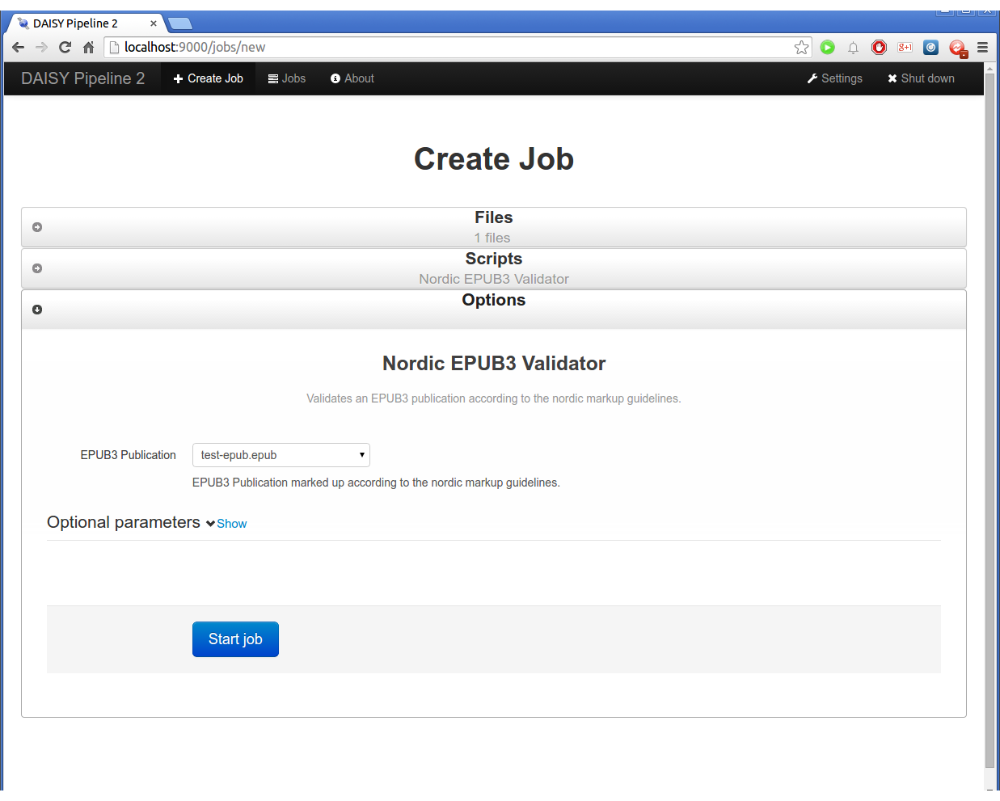
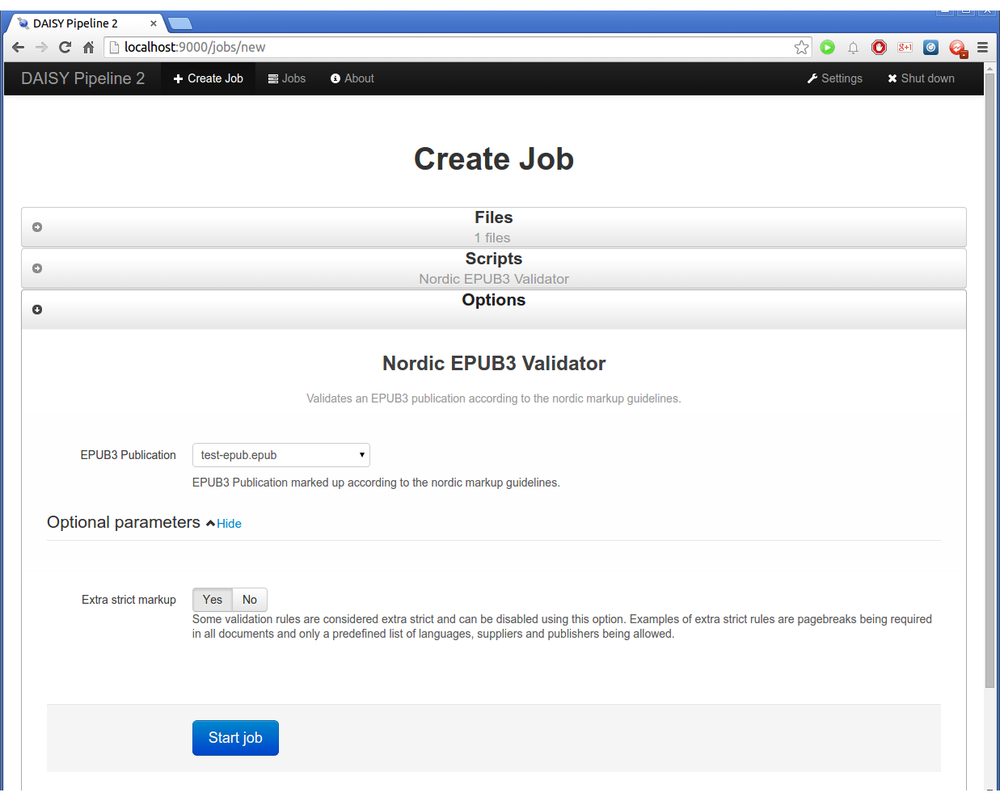
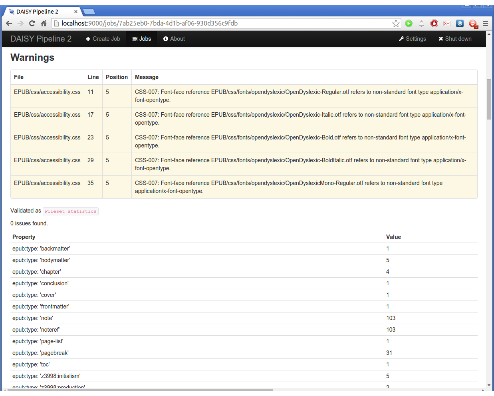
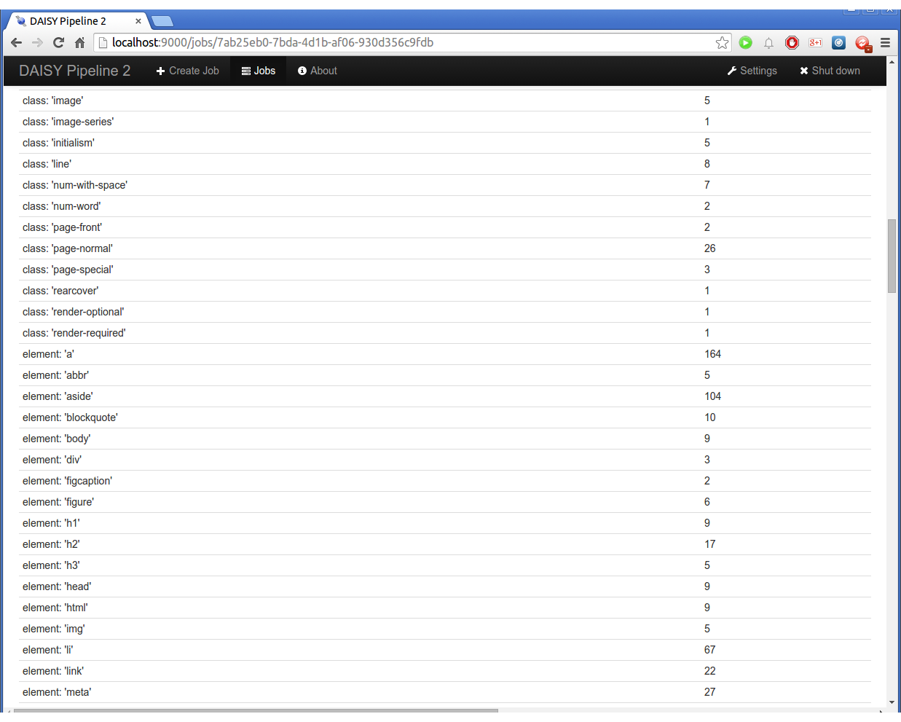
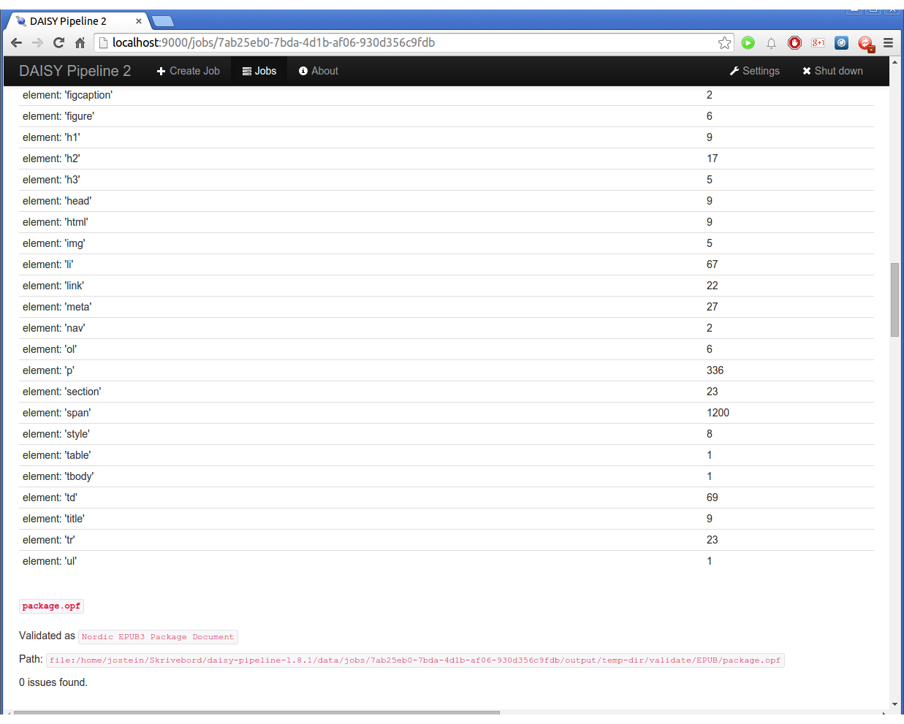
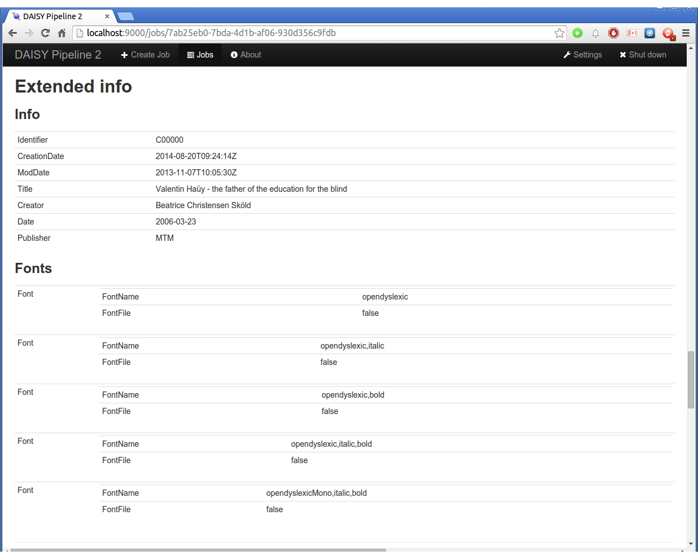
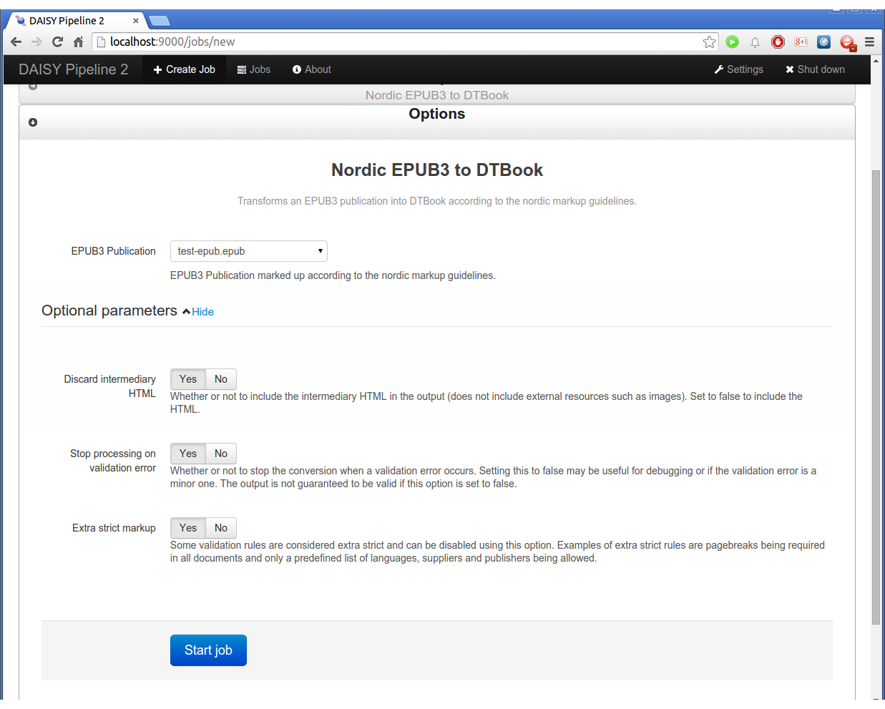

This is a basic introduction to installing and using the Nordic EPUB3/DTBook Migrator
for validating EPUB3 and converting EPUB3 to DTBook according to the nordic guidelines.
The guide is printer friendly (i.e. contains appropriate page breaks). The guide is
not complete yet, so for instance it's not very pretty yet. But it should contain the
basics to get you started using the Nordic Migrator.
Feedback to what should be clarified or added to this guide can be sent to
Jostein Austvik Jacobsen.
These instructions are for Windows. OSX or Linux users should use the ZIP distribution.
Download and unzip the third-party dependencies for the Nordic Migrator into C:\Program Files (x86)\DAISY Pipeline 2\daisy-pipeline\modules.
Download and put the Nordic Migrator into the same folder as above.
Note that the links above are relevant for build 158 which is the most recent as of time of writing. Newer versions for testing will be available from the Nordic Migrator SNAPSHOTs page.
When you start Pipeline 2 (for instance from the start menu), a browser window will open saying
"Starting the Pipeline 2 Web UI".
Pipeline 2 consists of the engine itself running in the background
and user interfaces to interact with the engine. First, the Web UI is started.
After the Web UI is started, the engine will be started. The Web UI will display a page
saying "Starting the Pipeline 2 engine".
When the engine is started, you will arrive at the "Welcome!"-page. You are now ready to use
Pipeline 2.
Click "Create Job" in the top-left corner. On the right, a list of "scripts" are displayed.
On the left, you can upload files. In Pipeline 2, when you execute a script, it's called a "job".
Click "Upload Files" (or drag-and-drop) to select the EPUB you want to validate or convert.

Select the script you want to use. The relevant ones are "Nordic EPUB3 Validator"
and "Nordic EPUB3 to DTBook".

Clicking the "Nordic EPUB3 Validator" script will take you to the options panel.
Everything should be pre-filled, so you can simply click "Start job" if you want to start the job.If you click "Show" next to the "Optional parameters" headline, you can see that the "Extra strict markup"
option is enabled. This option is meant for testing purposes by agencies other than the Nordic agencies. In production,
this option should always be "Yes" (which is the default).When the job is started you will see that it is "Running".TODO

TODOTODO

TODO

TODOTODO

TODOTODOTODOTODO

TODO